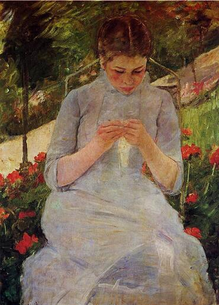

Картинная галерея портретов
 На главную
На главную
“Женщина за шитьём”
Женщина на картине изображена в те спокойные мгновения, когда она целиком поглощена своим шитьем. Перед нами не столько портрет, сколько этюд, где главное - взаимодействие цвета и света, которое могло быть подсмотрено только в натуре. Свой реалистический стиль художница обрела в Академии художеств в Пенсильвании, где она училась у Томасa Икинса. Позднее, перебравшись в Европу, Кэссет стала близким другом Эдгара Дега, который оказал огромное влияние на ее искусство. Кэссет принимала участие в выставке импрессионистов в 1874 году, и хотя по происхождению она американка, ее искусство считается частью движения французских импрессионистов. Многие картины Кэссет изображают мать и дитя, они написаны с чисто женской нежностью, которой нет в работах других импрессионистов, На Кэссет произвела большое впечатление японская гравюра, под ее влиянием она сама обратилась к технике гравюры на дереве и добилась в ней определенных успехов. Широко признана заслуга Кэссет в распространении стиля импрессионизма в Северной Америке.
 “Франциск |”
“Франциск |”